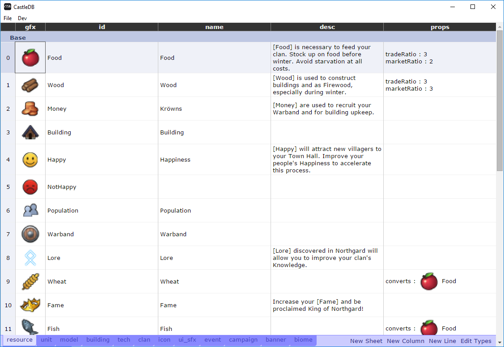

Nicolas Cannasse
Shiro Games
@ncannasse
GameCamp 2018
La Brute, DinoRPG, Hordes, KadoKado...
Haxe Foundation
Evoland 1&2, Northgard
|
|
|
Les deux approches sont complémentaires ! |
|
VITALE !
l'outil doit servir le jeu (pas l'inverse)
| Game Code | Scripts | Middleware |
| Engine | ||
| Langage | ||
| Runtime | DirectX, OpenGL, etc. | |
| Game Code | Scripts | Middleware |
| Engine | ||
| Langage | ||
| Runtime | DirectX, OpenGL, etc. | |
Echange de données entre jeu/engine.
Orienté Collaboration
Eviter les aller-retour
(GD/LD/Dev/Art)
Shiro Games: JSON
Orienté Performance
CastleDB.org - Static Database

XP équipe, amélioration, investissement long terme
/!\ outil trop générique
A chaque partie son bon niveau de code?
| Engine | Low Level (C++)
| Outils
| High Level (C#)
| Game Code
| High Level (C#)
| Contenu
| Script (Lua)
| |
A Shiro Games:
| Engine | Haxe (+libs C/C++)
| Outils
| Haxe / JS (HTML5 UI)
| Game Code
| Haxe
| Contenu
| HScript
| |
Améliorer le focus (Time To Play)
Exemple: Northgard <4s
Libs mais peu de moteurs
Godot / Heaps.io (Haxe) / etc.
haxe.org
castledb.org
github.com/HeapsIO
Le chemin avant la destination.
Merci !
nicolas@shirogames.com
@ncannasse